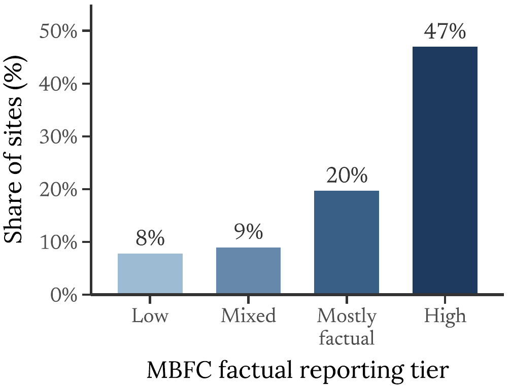

A ten-part evidence story
Selective Participation in the AI Data Commons
The updated paper is not just about whether publishers block AI crawlers. It is about who remains in the accessible web corpus, which AI uses publishers distinguish, and how those choices change the quality composition of the AI data commons.

9,611live media cross-section
7,002training/search sites
272,458site-months
23named crawlers
Evidence path
The argument moves from access decisions to data composition.
The figures and table rows are not separate exhibits. They accumulate into one mechanism: a voluntary, crawler-specific access regime lets higher-quality publishers restrict AI training while preserving search-like access, leaving the training-accessible pool less representative.
Access regimeRobots directives make publisher participation observable by crawler and use.
Quality selectionCredible and prominent publishers are more likely to restrict access.
CompositionQuestionable and political-pole outlets become relatively more accessible.
Use distinctionTraining access is restricted more than search access within publisher.
Design implicationBinary opt-out is too coarse for AI data governance.